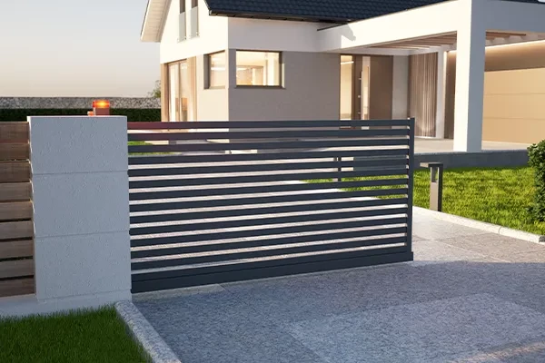

外構エクステリア
門まわり、フェンス、塀、ガレージ。家の外まわりも美しく整えて、住まい全体の印象を引き上げます。

外構が整うと、
住まい全体がもっと美しくなる。
せっかく外壁や屋根をきれいに塗り替えても、門扉やフェンスがサビていたり、ブロック塀が黒ずんでいたりすると、住まい全体の印象は少し残念なものになってしまいます。外構は、訪れる人が最初に目にする、まさに家の顔です。
また、外構の鉄部や木部は、雨風や紫外線の影響を直接受けるため、劣化の進みが早い部分でもあります。サビや腐食が進むと、塗装では直せず、交換が必要になることも少なくありません。
ペンキ塗総業では、門まわり・フェンス・塀・ガレージ・ウッドデッキなど、外まわりの塗装・補修を幅広く承っています。特に外壁塗装と同時に施工すると、色の統一感が生まれ、費用面でもメリットがあるため、おすすめしています。
こんなお悩み、ありませんか？
ひとつでも当てはまる場合は、早めの点検をおすすめします。
- 門扉やフェンスにサビが出ている
- ブロック塀が黒ずんでいる
- ウッドデッキが色あせてささくれている
- カーポートの柱がサビてきた
- 外壁を塗り替えたら外構が目立つ
- 家の外まわりの印象を変えたい
放置すると、どうなる？
劣化は少しずつ、確実に進んでいきます。早めのメンテナンスが、結果的に費用を抑えることにつながります。
色あせ・汚れ
塗膜が紫外線で劣化し、色あせや汚れが目立ちはじめる段階。塗装で手軽に美観を取り戻せます。

サビ・ささくれ
鉄部にはサビ、木部にはささくれや割れが発生。丁寧な下地処理をしてから塗装する必要があります。
腐食・破損
サビによる穴あきや木部の腐食で強度が低下。塗装では対応できず、部材の交換が必要になります。
ペンキ塗総業の外構塗装の特徴
細かな部分まで手を抜かない職人の仕事で、外まわりを美しく長持ちさせます。
素材に合わせた下地処理
鉄部にはサビを落とすケレンと防錆塗料、木部には木目を生かす保護塗料、ブロックには防水性のある塗料。素材ごとに最適な下地処理と塗料を選ぶことで、塗装の持ちが大きく変わります。

外壁と調和する色をご提案
外構の色は、外壁や屋根、サッシの色とのバランスが大切です。外壁塗装と同時にご依頼いただければ、住まい全体のカラーコーディネートをご提案し、統一感のある美しい外観に仕上げます。
外壁塗装との同時施工でお得に
外壁塗装と同時に施工すれば、職人の手配や養生をまとめて行えるため、別々にご依頼いただくよりも費用を抑えられます。「ついでにここも」というご相談も大歓迎です。
こんな場所に対応しています
家の外まわりにある、さまざまな部分の塗装・補修を承っています。
フェンス・柵
サビや色あせが目立つ鉄製フェンスも、ケレンと防錆塗装で新品のような美しさに。
門扉・門柱
家の顔となる門まわり。外壁の色と合わせることで、住まい全体に統一感が生まれます。
ブロック塀・塀
汚れやコケが付きやすいブロック塀を、防水性のある塗料で保護しながら美しく。
ガレージ・カーポート
鉄骨のサビ止めや、ガレージシャッターの塗装も。長く安心して使えるようにします。
ウッドデッキ
木部専用の保護塗料で、紫外線や雨による傷みや腐食から守ります。
物置・その他
物置や手すり、郵便受けなど、細かな部分もまとめてご相談ください。
使用する主な塗料
素材ごとに専用の塗料を使い分け、美しさと耐久性を両立させます。
防錆下塗り塗料
サビの発生を抑え、上塗りの密着性を高める鉄部専用の下塗り塗料です。
弱溶剤2液ウレタン
鉄部の上塗りに適した、ツヤと耐久性に優れた塗料です。
木部保護塗料
木目を生かしながら、紫外線や雨による劣化・腐食から木部を守ります。
ブロック用水性塗料
通気性と防水性を兼ね備え、ブロック塀の汚れやコケを防ぎます。
料金の目安
外構は形状や素材がさまざまなため、現地調査のうえでお見積りいたします（税込）。
| 工事内容 | 料金の目安 | 備考 |
|---|---|---|
| フェンス塗装 | 現地調査後 | 長さ・形状により変動します |
| 門扉・門柱塗装 | 現地調査後 | 外壁塗装と同時施工がおすすめ |
| ブロック塀塗装 | 現地調査後 | 面積により変動します |
| ウッドデッキ塗装 | 現地調査後 | 劣化状況により補修を含みます |
※建物の形状・劣化状況により変動します。正確な金額は無料の現地調査後にお出しします。
外構エクステリアの流れ
お問い合わせから完成まで、職人が責任を持って担当します。
現地調査
素材や劣化の状態、ご希望の仕上がりをお伺いします。
色・プランのご提案
外壁とのバランスを考えた配色と、お見積りをご提示します。
洗浄・下地処理
汚れやサビを落とし、塗装に適した状態に整えます。
塗装
素材に合った塗料で、丁寧に塗り重ねます。
完了・お引き渡し
仕上がりを一緒に確認し、お引き渡しします。
 BEFOREAFTER
BEFOREAFTER
お客様の声
外壁と一緒に門扉とフェンスもお願いしました。色を合わせたことで家全体がぐっと引き締まり、ご近所からもきれいになったねと言われます。
サビだらけだったフェンスが見違えるようになりました。細かいところまで丁寧に塗ってくださり、職人さんの仕事ぶりに感心しました。
外構エクステリアのよくある質問
はい、外構のみのご依頼も承っています。小さな範囲でもお気軽にご相談ください。
サビの程度によります。表面のサビであればケレンと防錆塗装で対応できますが、穴があいている場合は部材の交換をご提案することがあります。
木部は劣化が早いため、3〜5年ごとの塗り替えがおすすめです。定期的にメンテナンスすることで、デッキ自体が長持ちします。
塗装・補修が中心となりますが、内容によっては対応可能です。まずはご相談ください。
関連するサービス


プレゼント中
まずは無料診断から。
お住まいの気になるところ、まずはお気軽にご相談ください。職人が直接うかがい、無料で診断・お見積りいたします。
 写真を送るだけで概算もOK
写真を送るだけで概算もOKお見積り